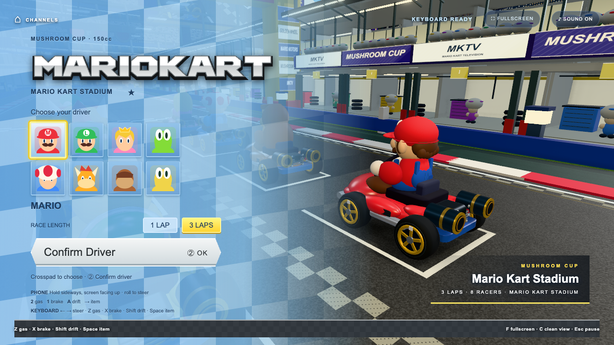

Open FreeWii
Install and launch the desktop app. The game menu and local relay start together.
Download the desktop app, scan a QR code, and play. No phone app, Node.js installation, or technical setup required.
Available for macOS, Windows, and Linux.

Install and launch the desktop app. The game menu and local relay start together.
Use your phone camera on the on-screen QR code. Both devices need to be on the same Wi-Fi.
Enable motion sensors on your phone, choose a game, and use your phone like a Wii remote.
Apple Silicon
Download .dmgIntel
Download .dmg64-bit Windows 10 or later
Download installer64-bit x86
Download AppImageThe current builds are unsigned. Your operating system may ask for confirmation before opening an app downloaded from the internet. Only install releases from this website or the official GitHub repository.
View all releases and release notesA computer with WebGL 2, a motion-capable phone, and a shared Wi-Fi network. The phone controller runs in its browser; there is nothing to install on your phone.